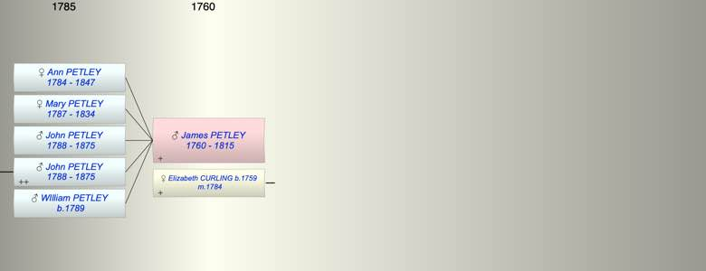

| [Index] |
| James PETLEY (1760 - 1815) |
|  |
| b. abt 1760 |
| m. 22 Jul 1784 Elizabeth CURLING (1759 - ) at St Laurence |
| d. 1815 aged 55 |
| Children (5): |
| Ann Cooper PETLEY (1784 - 1847) |
| Mary PETLEY (1787 - 1834) |
| John PETLEY (1788 - 1875) |
| John PETLEY (1788 - 1875) |
| WIlliam PETLEY (1789 - ) |
| Grandchildren (3): |
| Elizabeth PETLEY (1821 - ), John PETLEY (1822 - ), James PETLEY (1824 - 1824) |
| Events in James PETLEY (1760 - 1815)'s life | |||||
| Date | Age | Event | Place | Notes | Src |
| abt 1760 | James PETLEY was born | ||||
| 22 Jul 1784 | 24 | Married Elizabeth CURLING (aged 25) | St Laurence | Note 1 | |
| 11 Aug 1784 | 24 | Birth of daughter Ann Cooper PETLEY | MInster in Thanet | Note 2 | |
| 27 Jun 1787 | 27 | Birth of daughter Mary PETLEY | Minster in Thanet | Note 3 | |
| 1788 | 28 | Birth of son John PETLEY | |||
| 22 Aug 1788 | 28 | Birth of son John PETLEY | MInster in Thanet | Note 4 | |
| 1789 | 29 | Birth of son WIlliam PETLEY | |||
| 1815 | 55 | James PETLEY died | ex will | ||
| Death of son WIlliam PETLEY | Note 5 | ||||
| Personal Notes: |
|
WIll Prob 11/1568 ex Ancestry
of Cliffs End parish of St Saviour, Isle of Thanet, his brother Henry of Firle,Sussex, his brother in law John Hollands of Deal, his wife Elizabeth, his sons John Petley and WIlliam Petley, daughters Mary and Ann Cooper Petley, Codicil of 1812 shows his son WIlliam was missing at sea , Proved 20 May 1815 |
| Created on a Mac™ using iFamily for Mac™ on 8 Oct 2023 |